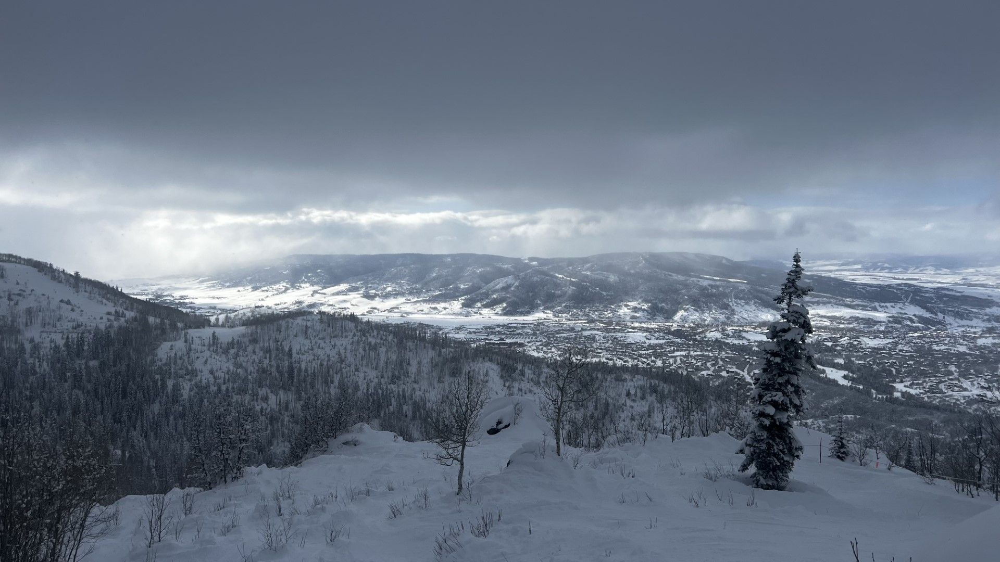
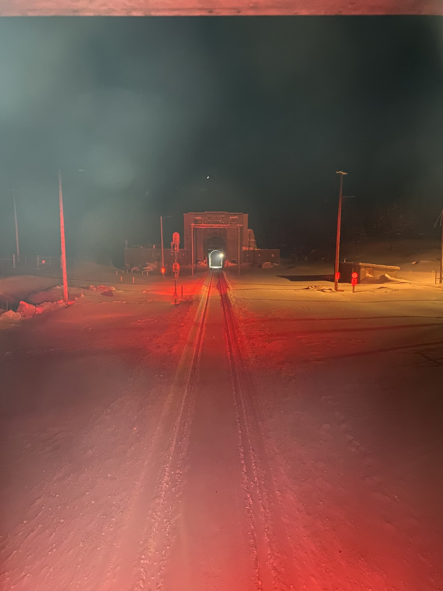
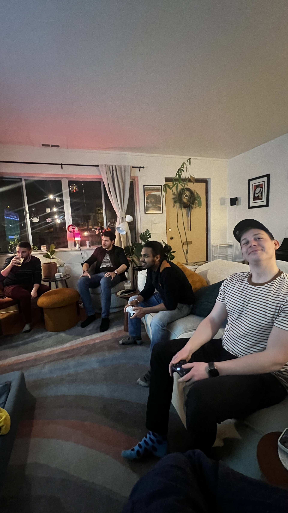
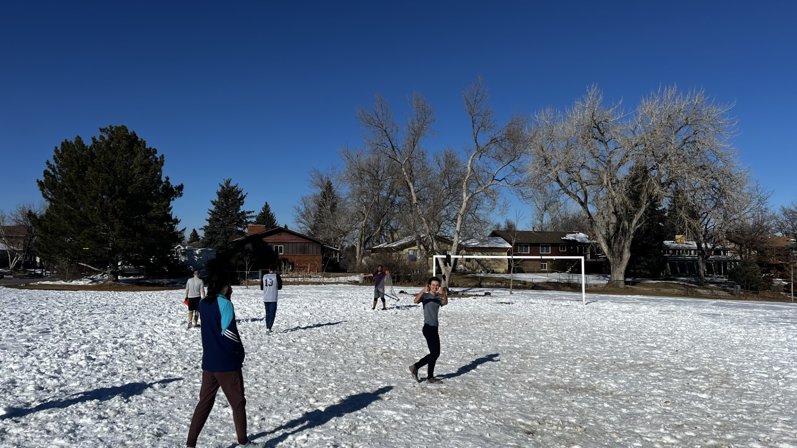
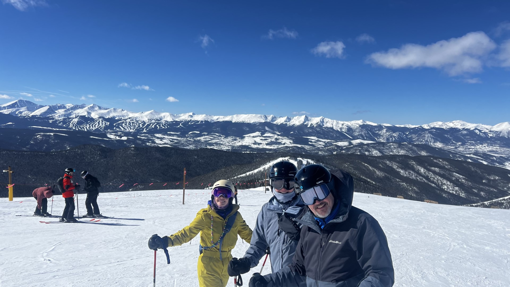
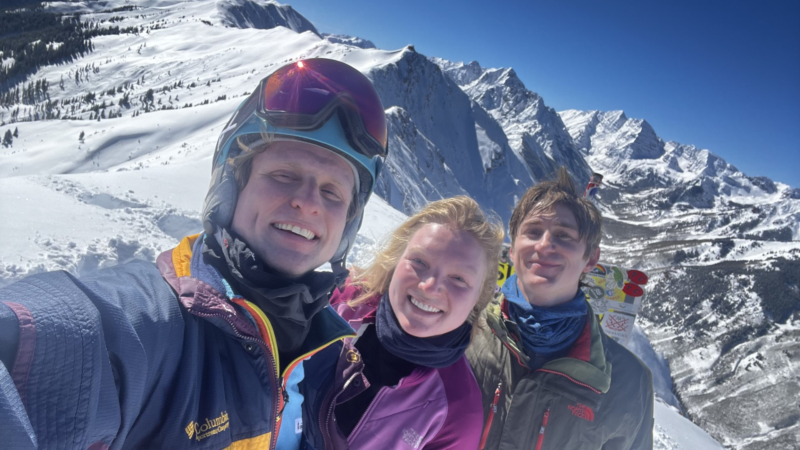
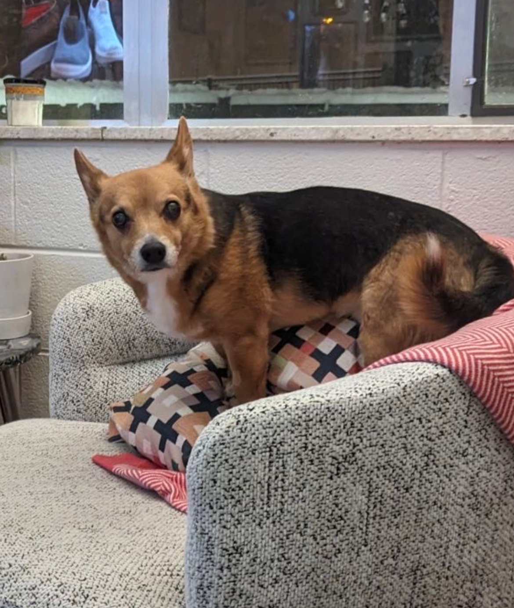

Getting ready to hike to the bowl at Aspen Highlands (the longest hike I've ever done with ski gear — we went all the way to the far summit!)
Kirk's January and February Update
One of my new year's resolutions this year was to "quit" social media — I didn't delete my accounts, but deleted the apps off my phone and haven't logged in for almost two months to either now. I was a little sad because I actually really enjoyed both places in the past, but I felt like my brain was rotting looking at instagram reels and whatever bullshit Elon Musk has been doing, and I just wasn't seeing updates from the people I cared about anymore (instagram has gotten really bad in that all I see are stupid "suggested posts" and ads instead of pictures from my friends!). I have been using Threads occasionally to get breaking news style information I used to get on Twitter, which kind of works? Nobody else really uses it so it's great because that means I can't scroll forever and there aren't any ads yet.
While I've enjoyed some peace and felt like I am not as addicted to my phone as a result of this experiment, I do really miss sharing what I've been up to and seeing what my friends have been up to, so in thinking about ways I could do that without getting sucked back into the social media vortex, I thought I'd try writing a blog post every month (or every couple months...judging that I already was too lazy to do this in January). I'm going to try to keep them short and mostly filled with images and videos like an Instagram post would be. I would also appreciate if after reading this if you sent me something similar (call/text/email me!) — even if it'ϡ just a screenshot of your latest insta post(s) — so I can keep up with you, too! And if you find a really good meme, screenshot/screen record and send it to me. I do miss the good memes.
Without further ado, here is my January/February update:
More than a year ago, Hannah, Peter, Kristina, and I went on a dope Steamboat trip where we stayed very far away in a very cheap hotel and survived on gas station pizza. After that trip we decided a bit of an upgrade was in order, so we booked a bougie AirBnB with a hot tub at an "award-winning eco home" and went back to Steamboat with a great crew this year! Unfortunately I got COVID a few days before the trip (which we had reserved a year ago) was supposed to start...and I was going to stay home but thanks to some encouragement from my friends and the fact that I had no symptoms I isolated from everyone else by sleeping on an air mattress in the laundry room when we were at the BnB and keeping the ski mask on when we were out shredding. I had a great time skiing and didn't give anyone COVID, so win-win! We were there during a huge storm system and had more than a foot of fresh powder every day, and we ended up leaving a day early because we were scared we were going to get snowed in. Getting home was a bit of an adventure as there was a lot of snow and my car tire somehow went completely flat while parked at the AirBnB, but luckily the host had an air compressor and I had my chains so was able to pump it up and limp home to Boulder.
Our friend Bobby had come from California for our Steamboat trip, and since we left early we decided we should get in another couple days at some other resorts. We went to Eldora Sunday and then decided to ball out and take the train to Winter Park on Monday for MLK day. Both were epic powder days, and on Monday we thought we had the clutch move because there was an avalanche that buried 10 cars and closed the road to winter park, so the only way to get there was by train. While the skiing was great unfortunately the train also broke in the weather...culminating in us arriving back home in Boulder at nearly 4am (when we should have been home around 7). Picture was taken by Peter out of the back of the train, showing where we got stranded just outside of Moffat Tunnel in a 10 degree blizzard for a while. But what a great adventure, and I will be taking the train again on 3/10 (they gave us a refund for this trip so girl math says this upcoming trip is free) and hopefully it will be more on time.
At the end of January we did a FIFA competition with some soccer friends (and Sajal). The loser had to take home a mug that says "I'm shit at FIFA" (thanks Immie for this great present) — Robert lost and Lucas won. We will have another tournament soon to see if the mug changes hands!
Despite lots of snow, Soccer Sunday (TM) persists! When I'm not skiing on the weekend I try to keep the Soccer Sunday spirit alive, and this was a great time we had where everyone was falling — pure chaos given that there was roughly 6 inches of snow on the ground. Abdullah scored two headers on the tiny goals I think which might be his record?? A great time and I love all my Soccer Sunday friends!!
Hannah's parents came out for a four day trip to Keystone! They both hadn't skied in something like a decade but absolutely crushed it. Even talked Shawn (Hannah's dad) into doing a black at the end! Was our first time at Keystone and we really liked it — probably one of the best mountains for beginners in Colorado I would say. Also, Hannah and I have been together more than two years! We don't have a set anniversary yet, but it's sometime around February...I probably think it's earlier than she does. :)
Finished the Keystone trip on Thursday, said goodbye to Hannah's parents Friday morning, and then Friday night went to Aspen with Peter and Kya! We stayed in Glenwood springs and it was cheap and lovely. Hiked the Highlands bowl (this photo is us at the top — see header photo for pic at the beginning) and got a fun pin for doing it, and had incredible powder days at both Snowmass and Highlands. I had never been to Aspen before and it was super fun and surprisingly less expensive than I thought. We were jamming at Apres ski every afternoon and had a blast. I did the (medium) big jumps in the their terrain park and also took a 5 inch chunk out of my ski on a hidden rock. On our way back we had a powder day at Copper and I landed my first 360 in the wild! See video below (or click here) for some ski highlights (and epic yardsale — don't worry Mom, I'm fine!) in motion:
Thanks for reading, and please shoot me a message with something you've been up to! Finally, while I no longer post my "ski days with the boiz" on insta, here are my shout-outs to incredible boiz I've skied with since "quitting" Instagram:
And in case you miss my ski day with the boiz posts, here are all the boiz I've skied with so far this year:
- Aimee and Immie at Copper (Immie and I made a legendary meme video of her falling on a jump you should ask her to see if you haven't already) on 1/4
- Hannah at Eldora on 1/8 (where we literally did the race lift like 2 times and then left because the main lift broke right when we got there...)
- Lindsey, Kristina, Tommy, Hannah, Peter, Kya, and Bobby at Steamboat on 1/11 and 1/12
- Peter and Bobby at Eldora on 1/13
- Peter, Bobby, and Hannah at Winter Park on 1/14
- Tatsuya at Eldora on 1/24
- Dennis and John at Eldora on 2/3
- Joshua and Aimee at Eldora on 2/6
- Peter, Paul, and Aimee at Copper on 2/7
- Shawn, Detra, and Hannah at Keystone on 2/12, 2/13, and 2/15
- Peter and Kya at Aspen on 2/17 and 2/18
- Peter and Kya at Copper on 2/19
Total ski days this season: 25 (16 since the New Year)
Person most skied with: Tie between Peter and Hannah (both with 7!)
Song of the month: At the River, by Groove Armada (featured in ski video). Runner-up: "new" Linkin Park (Lost) throwing me back to angsty middle school days.
Did I do any work? Yes! Despite skiing so much, I also managed to submit a NASA FINESST proposal and some conference abstracts...now I am working on fitting my model developed as part of my first paper to a different kind of data (taken with Hubble) on a different object (NGC 5548).
Want to see more of these? Make sure to opt-in by filling out this form.
Spud photo of the month:
Caught sitting a weird way...why does he do this?